| 日付 | 2018年5月4日（金） - 2018年5月6日（日） | ||||
|---|---|---|---|---|---|
| 山域 | 中央アルプス | ||||
| メンバー | 家族（妻、長女・7歳、長男・4歳） | ||||
| 山行形態 | 子連れ2泊3日ホテル泊 | ||||
| アクセス | 車 | ||||
| ルート (Map1) |
|
2日目
本日は晴予報。ちょうど旅行の中日が晴れるのは幸運だ。
早速、南木曽岳の登山口に移動する。標高970m。
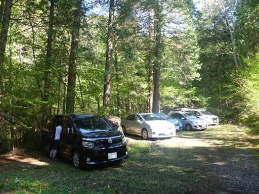
登山口には小さな小屋がある。ここにある駐車場はすでにいっぱいで下の駐車場に停めた。
まだ8時半前なのにすごい人出だ。思いの外、人気の山で少し驚く。
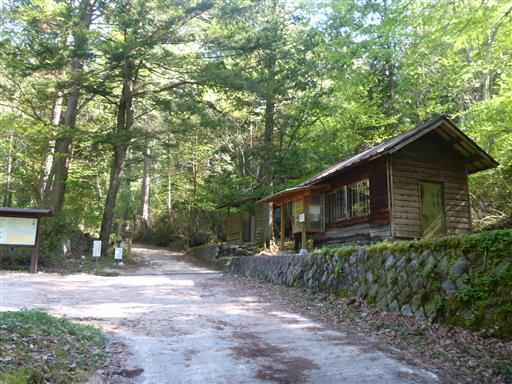
車道をショートカットするような形で登山道が付けられている。
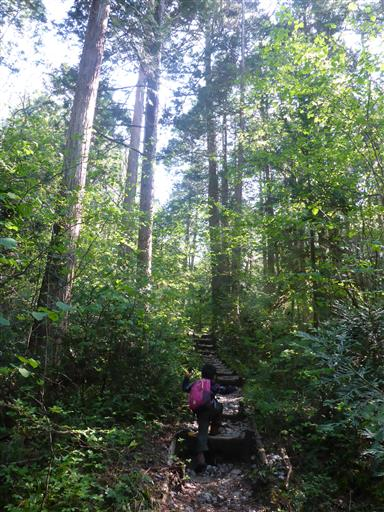
岩の上に木が乗っかっている。
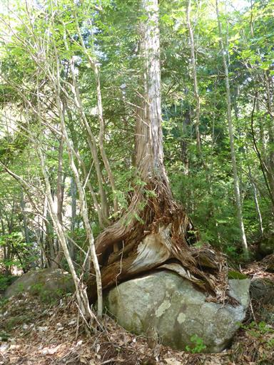
再び車道に出てくる。
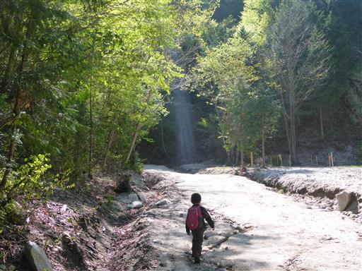
道脇の案内マップはバラバラに割れて用を成していない。
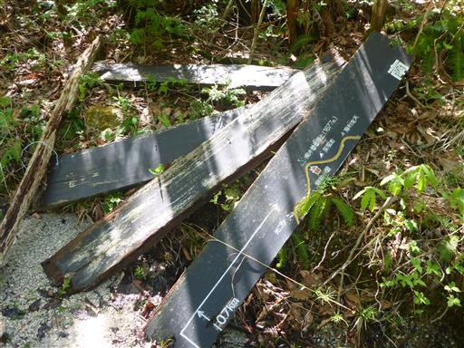
金時産湯の池。金太郎が産まれたときの産湯の池だと言い伝えられている。
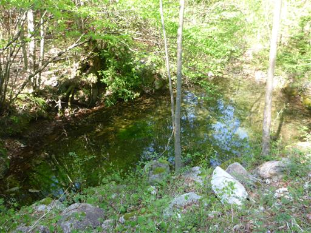
目の前に南木曽岳が姿を現す。
急斜面で聳える姿は存在感抜群だ。
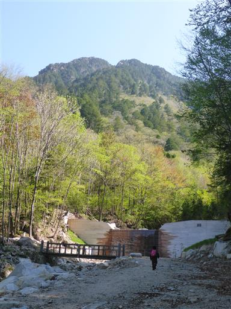
木の橋を渡る。ここから本格的な登山道が始まる。
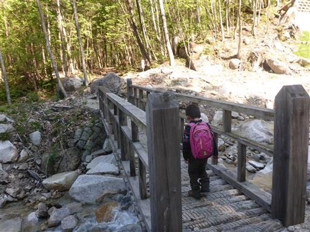
道の脇に木材が大量に積まれている。
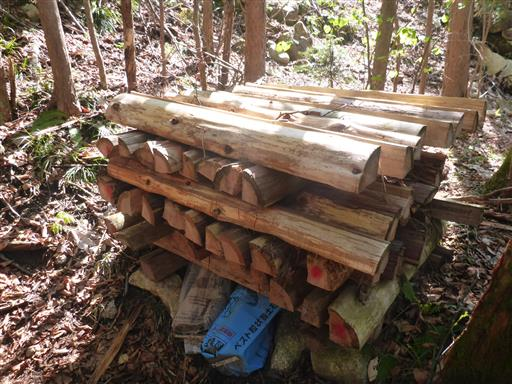
大きな切り株。中は空洞で笹が生えている。
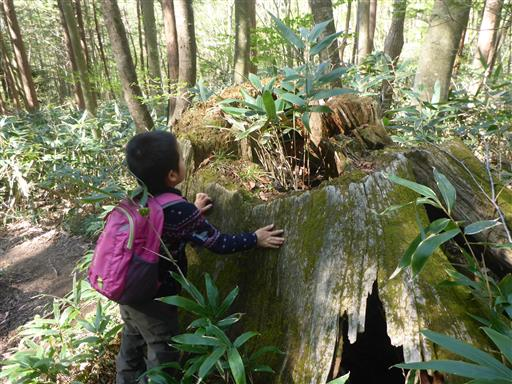
ヒノキの巨木。木曽はヒノキの産地として有名だ。
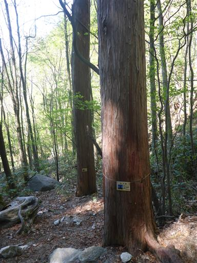
木で造られた橋を渡る。
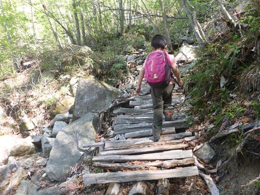
金時の洞窟。近づける道はないため、遠くから眺めるのみだ。
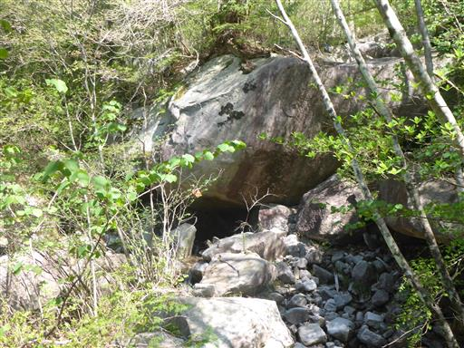
間隔が広い木橋。下が見えるので少々怖い。
息子はこのような場所が苦手で、慎重に歩いている。
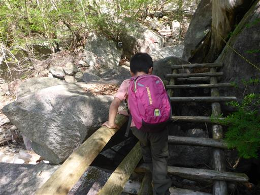
大きな岩があちこちにあり、よじ登って行く。
息子は金時の洞窟を見てから、岩の隙間の穴を見つける度に
「洞窟」と言っている。
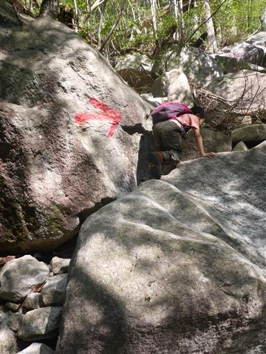
頭上に現れる木橋。
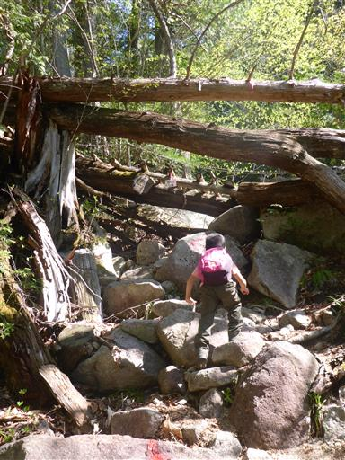
その木橋を渡って登って行く。アクロバティックな登山道だ。
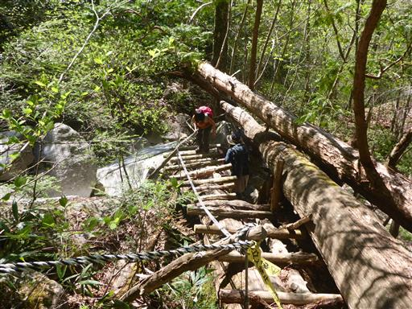
木の割れ目に木の根がめり込んでいる。木が生長して石を割ったのだろうか？
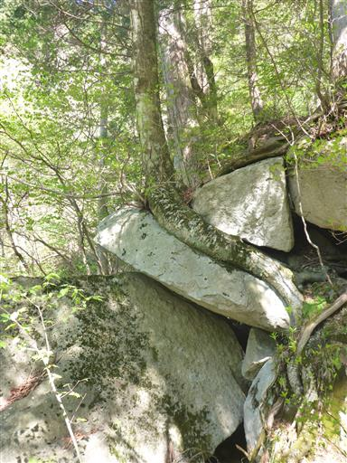
何度か沢を渡る。水の流れはあまりない。

喉の滝の標識があるが、近くにあまり滝らしいものは見当たらない。
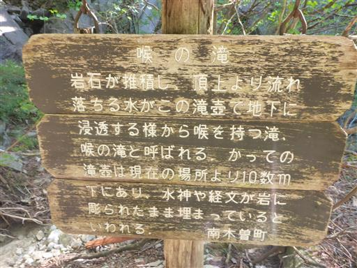
石だらけで歩きにくいが、こういう登山道の方が変化があって面白い。
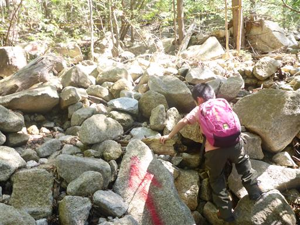
巨大な石が今にもこちらに倒れてきそうだ。
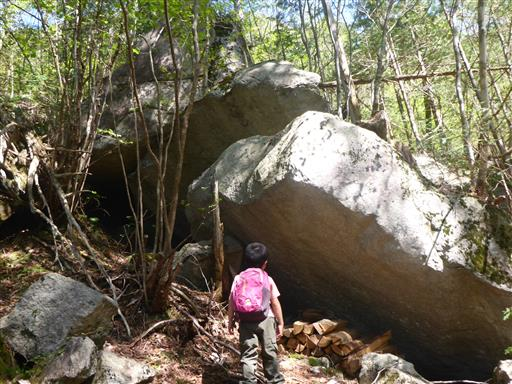
急斜面に取り付けられた木橋。整備してくれている人に感謝だ。
登山口にあった木材は登山道を整備するために使われているのかもしれない。
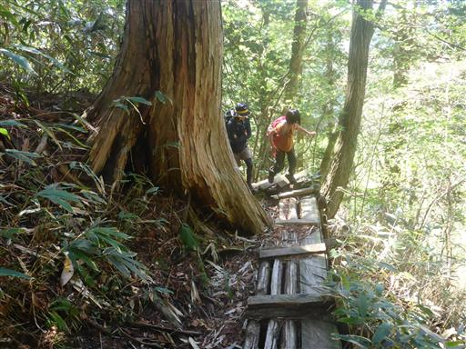
高野槇林。高野槇の大木が林立している。
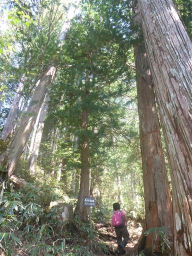
傾斜はますます急になってきて、梯子と鎖が現れる。
梯子を持てば事足りるので、鎖はあまり役に立たなさそうだ。
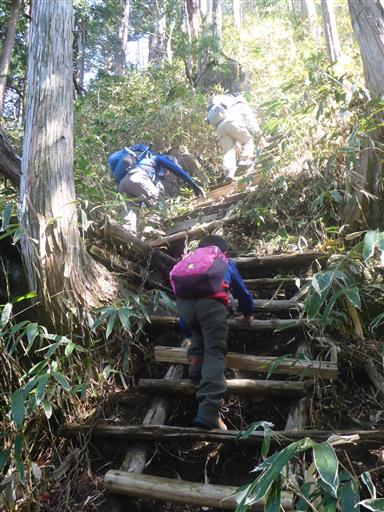
岩にしがみつくようにして生える木。

ずっと樹林帯の中を歩いてきたが急に視界が開けて明るくなる。
左のルートにロープが見えるが、右に立派な道がついている。
左の方が面白そうではあるのだが…
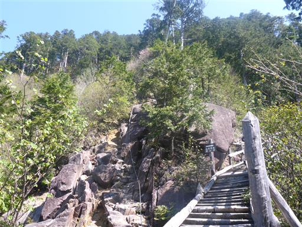
本日初めての展望。丸い山は名峰・恵那山だ。
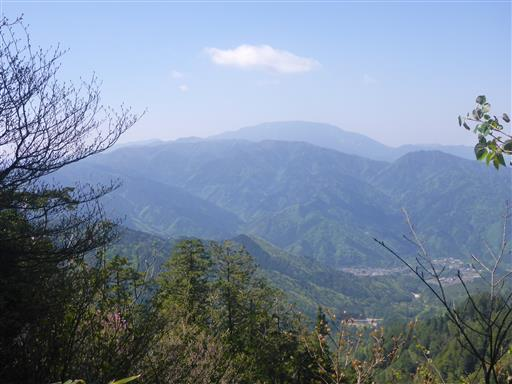
急斜面の道は続く。そろそろ子供たちも疲れてきた。
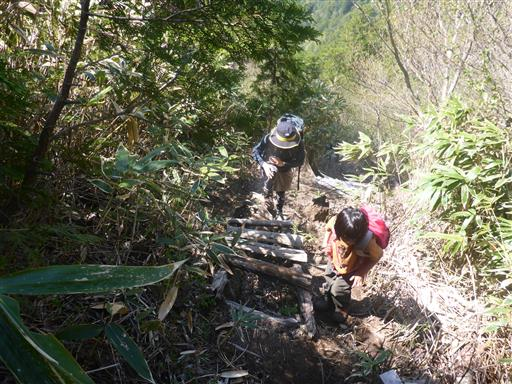
かぶと岩。かなり遠いところにあって見にくいが、一際立派な岩だ。
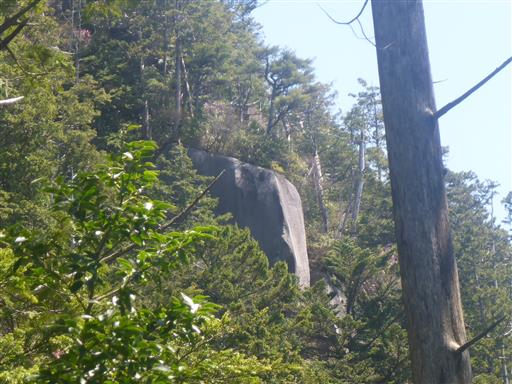
山頂に近づくと、ちらほらとアカヤシオの花が見られる。
岩がちな地形の山ではよく咲いている。
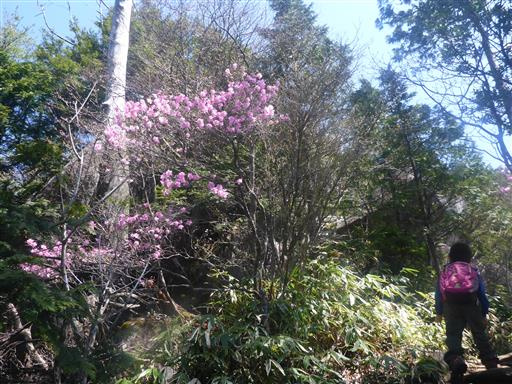
傾斜の緩い大岩があり、少し登って遊ぶ。
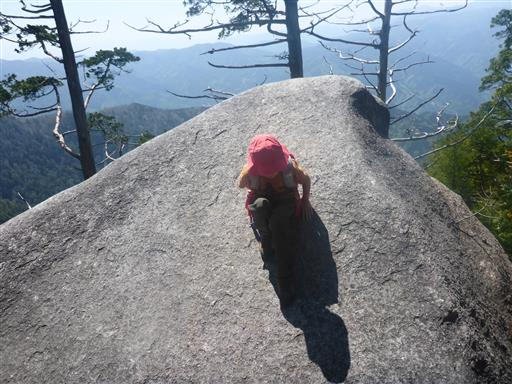
南木曽岳頂上に到着。標高1679m。
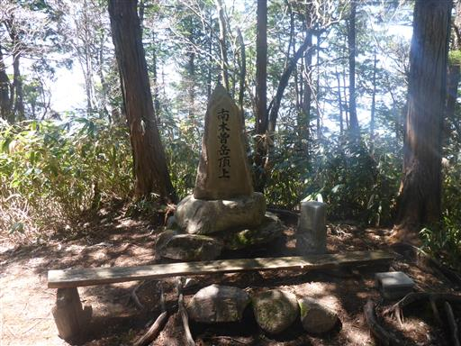
山頂は樹林帯に囲まれていて展望は全くない。
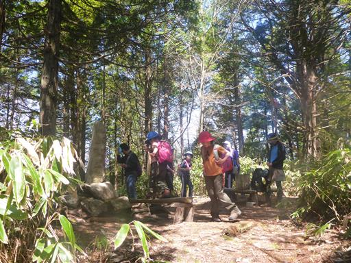
足元にバイカオウレンの花がたくさん咲いている。
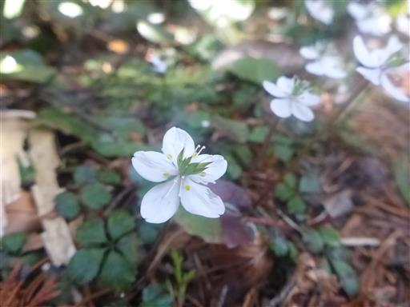
山頂は展望が無いためすぐに出発し、近くにある展望台に移動して昼食をとることにする。

ここからは西側の展望が広がる。遠くに見える雪山は御岳山だ。
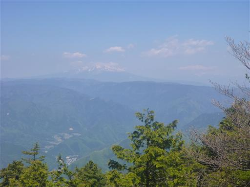
こちらは阿寺山地の山々。目の前が崖で落ち着かず、風も冷たくて寒いので
昼食は途中で切り上げて早々に退散する。
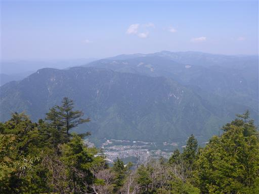
ここから先は笹原が広がる明るい登山道になる。
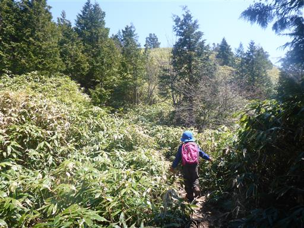
木々の間から高い山々の姿が見えてくる。
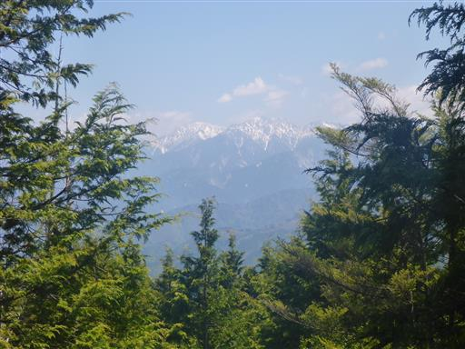
南木曽岳避難小屋に到着。
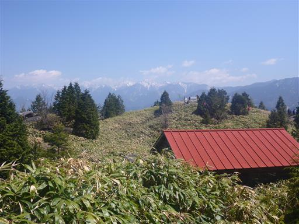
避難小屋の近くは小さなピークになっている。
展望が良い場所なので多くの登山者が集まっている。
ここの方が昼食をとるには適していそうだ。みんな良く知っている。
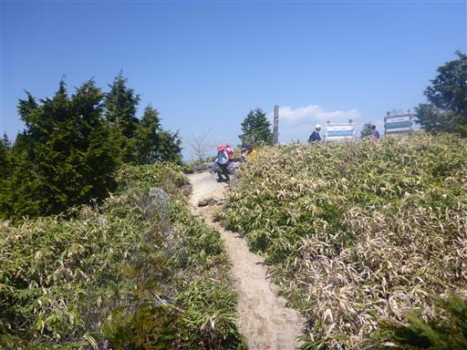
この周辺は笹原が広がっていて、非常に美しい。
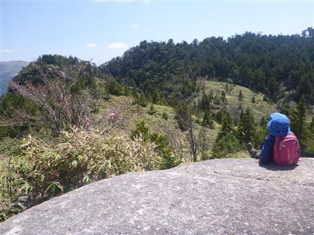
ここからの展望は素晴らしい。中央アルプスの山々が大きく見える。
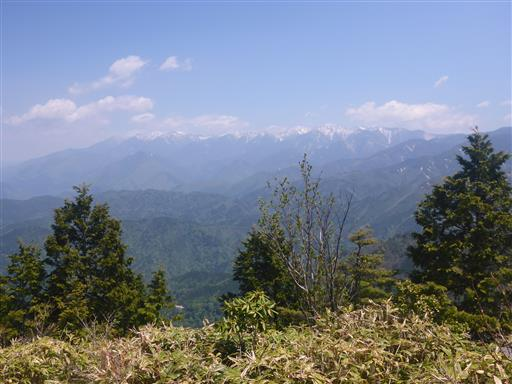
こちらは中央アルプス南部の山々。
奥念丈岳、安平路山など歩いてみたかった山々が並んでいる。
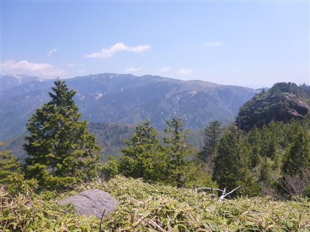
そして恵那山。恵那山は一際大きく存在感がある。
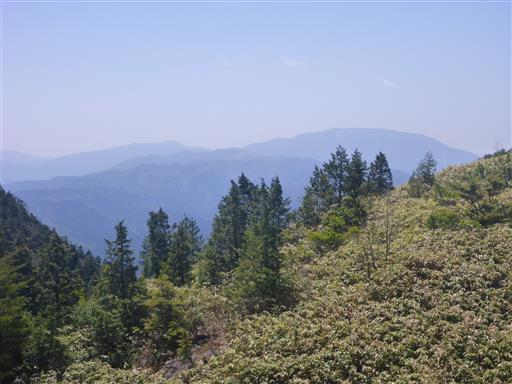
2度目の昼食をとったら昼寝タイム。
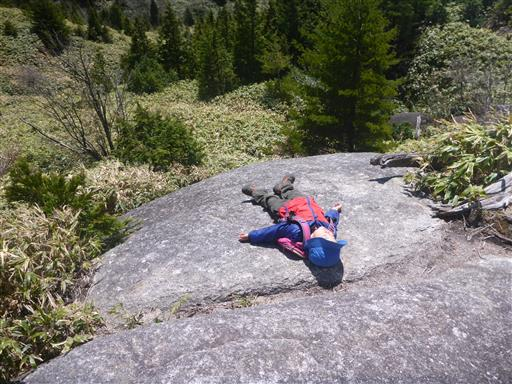
ゆっくり休憩をとったら下山を開始する。
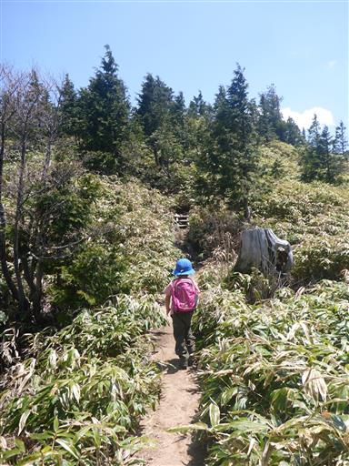
大きな岩を見上げる。花崗岩の巨石だ。
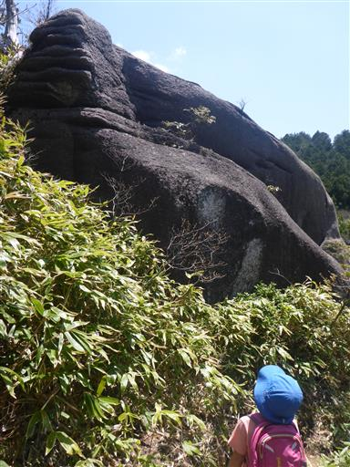
登山道が崩壊し、杭が宙に浮いている。ここには迂回路が設けられている。
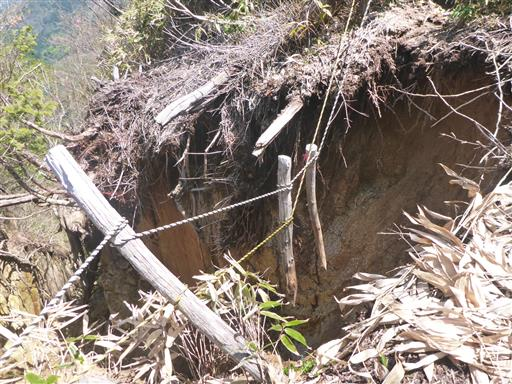
美しい笹原の山頂部を眺める。ここからは樹林帯の中の登山道が始まる。
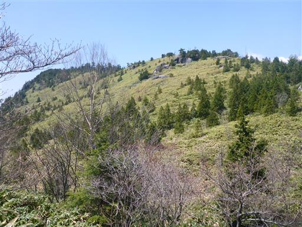
下山道の標識。しかし目の前に見えるのは、どう見ても登り道だ。
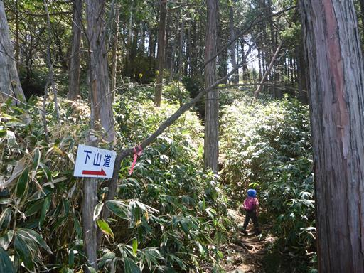
足元にショウジョウバカマがたくさん咲いている。
摩利支天に到着。小さな岩場で眺めが良い。
ここも周りが崖で落ち着かないため、早々に退散する。
この辺りから登山道はかなりの急斜面になる。
ロープなどに捕まりながら下っていく。
延々と続くはしご。
息子はうまく下りられないため、手を繋いで下っていく。
ここにも巨石が聳えている。挟まっている石が落ちてきそうだ。
大木があちらこちらで見られる。良く自然が保たれているようだ。
針葉樹だけでなく広葉樹も見られる。新緑が美しい。
堰堤に到着。表面は木で、珍しいデザインの堰堤だ。
ここで小休止。脇から堰堤に登ってみる。
ここから駐車場まではすぐ。川などで遊びながら歩いていく。
登山口近くの男滝・女滝に寄り道することにする。こちらは男滝。
女滝。木が邪魔してよく見えない。
男滝の滝壺まで行ってみることにする。
石の上をピョンピョン跳ねて移動する。
大人には簡単だが娘は苦戦、息子は抱っこで移動だ。
近くから見るとそれなりの迫力だ。
登山口の小屋まで戻ってくる。
南木曽岳は地味な山だと思っていたが、意外に登山者は多かった。
開放感ある展望台からの景色は素晴らしく、
急斜面が連続する登山道も特徴的で、面白い山だった。
登山で疲れた子供たちを寝かせ、車で宿まで移動する。
今回の旅行で2泊したのは「自由旅クラブ 木曽三河家」。
まだ食事の時間まで少し間があるので、木曽福島の町を散策する。
大きなこいのぼりが泳いでいる。
この辺りで名高い興禅寺に行ってみる。

門に続く道は新緑が美しい。
残念ながら閉まっている。調べてみると16:30までで、15分ほど前に閉まってしまったようだ。
仕方なく再び周囲をぶらぶらしていると、木曽川の川辺に下りられる場所を発見。
町中を流れる川にしては、水は非常にきれい。
暑ければ川遊びをしても良いくらいの水質だ。
ここでも木の棒を持ってきて釣り遊び。
夕方になったので宿に戻る。
部屋からは先ほど遊んだ木曽川の流れが見える。
夕食時、子供たちにはおもちゃを持ってきてくれる。
かごの中から一つ選ばせてもらえる。
子供たちは大喜び。なかなか粋な計らいだ。